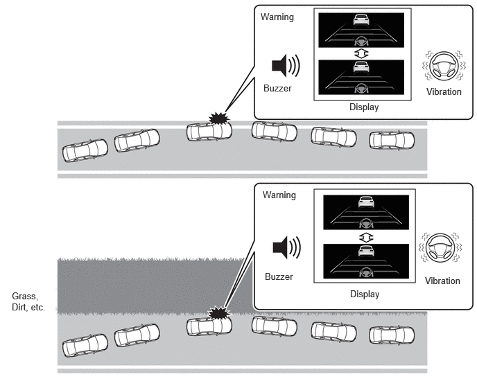
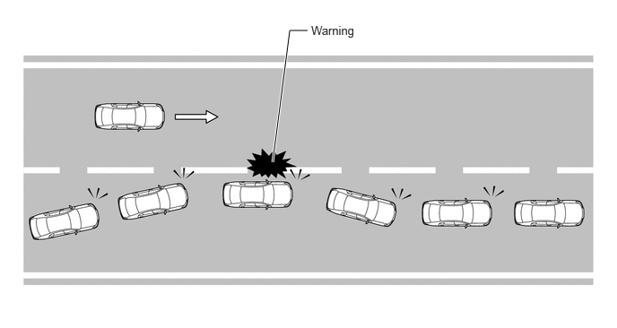
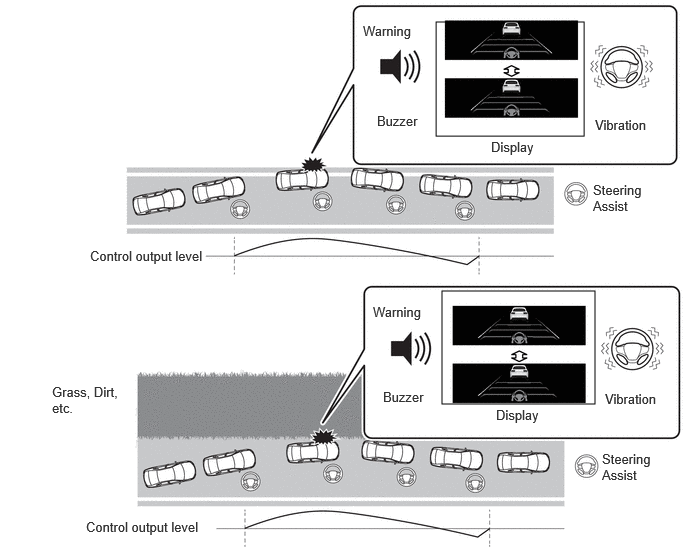
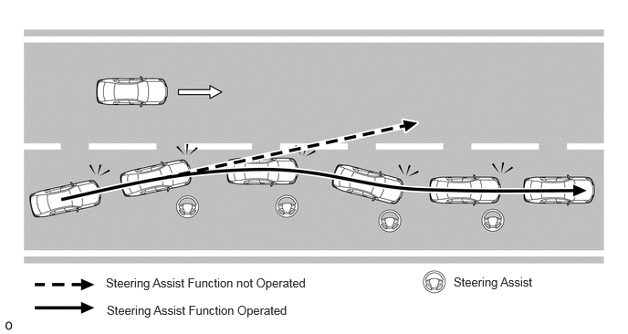
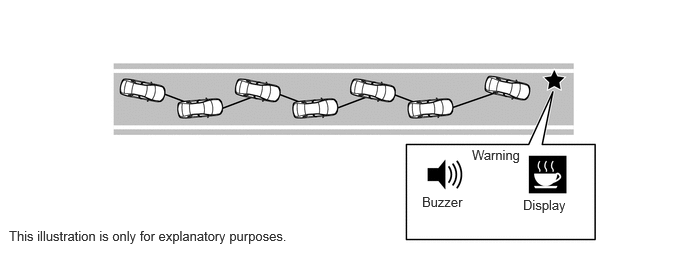
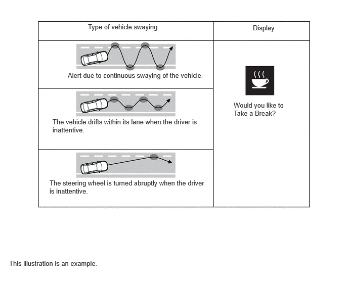

- LDA is set to "On" via the customize settings.
- The vehicle speed is within operation speed.*2
- Lane markers or lane boundary are detected.
- No turn signal command is detected.*3
- VSC or TRC is not turned off.*4
| Last Modified: 10-07-2025 | 6.11:8.1.0 | Doc ID: NM100000002GLT1 |
| Model Year Start: 2024 | Model: Tacoma | Prod Date Range: [12/2023 - ] |
| Title: ADVANCED DRIVER ASSISTANCE SYSTEM: LANE DEPARTURE ALERT SYSTEM: LANE DEPARTURE ALERT CONTROL; 2024 - 2026 MY Tacoma Tacoma HV [12/2023 - ] | ||
LANE DEPARTURE ALERT CONTROL
SYSTEM CONTROL
(a) Lane Departure Alert Function
(1) Operating Conditions
- When the following conditions are met, lane
departure monitoring is performed*1
*1: The system monitors the vehicle position and the current lane or course, and warns the driver if it deviates from the lane, course, etc. *2: Operates when the vehicle speed is approximately 50 km/h (31 mph) or more. (Operation may be possible when the vehicle speed is approximately 40 km/h (25 mph) or more if vehicles, motorcycles, bicycles, or pedestrians are detected near the lane.)
*3: If the system determines that the vehicle may collide with a vehicle in an adjacent lane, the lane departure alert function will operate even if the turn signals are operating. (Models with Blind Spot Monitor)
*4: Models for American Samoa, New Caledonia, Mexico, and Puerto Rico.
HINT:
If a pedestrian or parked vehicle is detected and it is judged that the driver is performing avoidance, the alert does not perform.
(2) Operation Timing
- If the function judges that the vehicle may deviate from the lane or lane boundary it is in, the function illuminates the indicator in the combination meter display, vibrates the steering wheel and sounds a buzzer so that the driver can take action to avoid lane departure. 
- If the function judges that departing the current lane could cause a collision with a vehicle traveling in a neighboring lane even when the turn signal lights are on, it provides a warning (Model with Blind Spot Monitor). 
(3) Suspended/Resume
- When the following cancellation conditions are met, the lane departure alert function is suspended.
- When the following resume conditions are met, the
lane departure alert function resumes.
Suspended
Resume
*1: Operates when the vehicle speed is approximately 50 km/h (31 mph) or more. (Operation may be possible when the vehicle speed is approximately 40 km/h (25 mph) or more if vehicles, motorcycles, bicycles, or pedestrians are detected near the lane.) *2: If the system determines that the vehicle may collide with a vehicle in an adjacent lane, the lane departure alert function will operate even if the turn signals are operating (Model with Blind Spot Monitor).
The vehicle speed is outside of the operation speed*1
The vehicle speed is within operation speed.*1
A turn signal command is detected*2
A certain amount of time has elapsed since the turn signal lights were turned off.
No lane markers or lane boundary are detected.
Lane markers or lane boundary are detected.
Immediately after the lane departure alert is activated.
The conditions to start operation listed above are satisfied.
The vehicle crosses halfway or further over a lane marker.
It is confirmed that the vehicle is driving in its lane.
Detection of the lane width other than regulated.
A specified lane width is detected.
Detection of the curve radius other than regulated.
Detection of the curve radius other than regulated.
If the steering assist generated to change the direction of vehicle travel is detected
A certain amount of time has elapsed since a steering operation with the intention of changing lanes was detected.
Deceleration at or above a constant speed is detected.
A certain period of time has elapsed since an acceleration and deceleration of more than a certain amount was not detected.
Systems related to vehicle safety, such as the pre-collision system is operate.
A certain amount of time has elapsed since pre-collision system operation was suspended.
If the steering angle reaches a certain amount.
A certain amount of time has elapsed since a steering angle more than a certain amount was not detected.
A malfunction is detected in the system.
The system condition returns to normal.
(4) Canceled/Resume
- When the following cancellation conditions are met, the lane departure alert function is canceled.
- When the following resume conditions are met, the
lane departure alert function resumes.
Canceled
Resume
LDA is set to "Off" via the customize settings.
LDA is set to "On" via the customize settings.
When the system is temporarily stopped.
After normal operation is confirmed, the LDA is set to "On" via the customize settings.
When a system malfunction is detected.
When the LDA is set to "On" via the customize settings again, normal system operation is confirmed.
When the ignition switch is off.
The hybrid system starts.
(b) Lane Departure Prevention Function
(1) Operating Conditions
- In addition to the lane departure alert
conditions, steering assist operates when the alert
is being performed and the following conditions are
met:
*1: Operates when the vehicle speed is approximately 50 km/h (31 mph) or more. (Operation may be possible when the vehicle speed is approximately 40 km/h (25 mph) or more if vehicles, motorcycles, bicycles, or pedestrians are detected near the lane.) *2: If the system determines that the vehicle may collide with a vehicle in an adjacent lane, the lane departure alert function will operate even if the turn signals are operating.
*3: Models for American Samoa, New Caledonia, Mexico, and Puerto Rico.
- LDA is set to "On" via the customize settings.
- The vehicle speed is within operation speed.*1
- Lane markers or lane boundary are detected.
- No turn signal command is detected.*2
- VSC or TRC is not turned off.*3
HINT:
If a pedestrian or parked vehicle is detected and it is judged that the driver is performing avoidance, the alert does not operate and lane departure control is not performed.
(2) Operation Timing
- If the function judges that the vehicle may deviate from the lane or lane boundary it is in, the function illuminates the indicator in the combination meter display and vibrates the steering wheel or sounds a buzzer so that the driver can take action to avoid lane departure. 
- If the function judges that departed the current lane could cause a collision with a vehicle traveling in a neighboring lane even when the turn signal lights are on, it provides a warning and performs steering assistance (Model with Blind Spot Monitor). 
(3) Suspended/Resume
- When the following cancellation conditions are met, the lane departure alert function is suspended.
- When the following resume conditions are met, the
lane departure alert function resumes.
Suspended
Resume
*1: Operates when the vehicle speed is approximately 50 km/h (31 mph) or more.(Operation may be possible when the vehicle speed is approximately 40 km/h (25 mph) or more if vehicles, motorcycles, bicycles, or pedestrians are detected near the lane.) *2: If it is determined that departing the current lane could cause the vehicle to collide with a vehicle traveling in a neighboring lane, the lane departure alert system operates even while the turn signal lights are flashing (Model with Blind Spot Monitor).
The vehicle speed is outside of the operation speed*1
The vehicle speed is within operation speed.*1
A turn signal command is detected.*2
No turn signal command is detected.
Immediately after the lane departure control function is activated.
A few seconds have elapsed since the warning was output and it is confirmed that the vehicle is driving in its lane.
The vehicle crosses halfway or further over a lane marker.
It is confirmed that the vehicle is driving in its lane.
Detection of the lane width other than regulated.
A specified lane width is detected.
Detection of the curve radius other than regulated.
A curve with a radius larger than specified is not detected.
If the steering assist generated to change the direction of vehicle travel is detected.
A certain amount of time has elapsed since a steering operation with the intention of changing lanes was detected.
If the steering angle speed reaches a certain amount.
A certain amount of time has elapsed since a steering angle more than a certain amount was not detected.
Deceleration at or above a constant speed is detected.
A certain period of time has elapsed since a deceleration of more than a certain amount was not detected.
Systems related to vehicle safety, such as the VSC is operate.
A certain amount of time has elapsed since system operation was suspended.
Systems related to vehicle safety, such as the pre-collision system is operate.
A certain amount of time has elapsed since pre-collision system operation was suspended.
If the steering angle reaches a certain amount
A certain amount of time has elapsed since a steering angle more than a certain amount was not detected.
Systems related to vehicle safety, such as the VSC do not operate.
Systems related to vehicle safety, such as the VSC is operate.
A malfunction is detected in the system.
The system condition returns to normal.
(4) Canceled/Resume
- When the following cancellation conditions are met, the lane departure alert function is canceled.
- When the following resume conditions are met, the
lane departure alert function resumes.
Canceled
Resume
LDA is set to "Off" via the customize settings.
LDA is set to "On" via the customize settings.
When the system is temporarily stopped.
After normal operation is confirmed, the LDA is set to "On" via the customize settings.
When a system malfunction is detected.
When the LDA is set to "On" via the customize settings again, normal system operation is confirmed.
(c) Break Suggestion Function
(1) Operating Conditions
- When the following conditions are met, the driver
break suggestion function operates:
- Break suggestion function is set to "On" via the customize settings.
- Lane markers or lane boundary are detected.
- No turn signal command is detected.
(2) Operation Timing
- The function detects drift of the vehicle within its lane, which is often the result of a driver who is tired, distracted or not looking ahead, based on the position of the vehicle within its lane and the steering inputs of the driver, to alert the driver. 
- The function provides a warning to alert the driver when any of the following conditions occur: 
(3) Suspended/Resume
- When the following cancellation conditions are met, the break suggestion function is suspended.
- When the following resume conditions are met, the
break suggestion function resumes.
Suspended
Resume
No lane markers or lane boundary are detected.
Lane markers or lane boundary are detected.
A turn signal command is detected.
No turn signal command is detected.
Detection of the curve radius other than regulated.
A curve with a radius larger than specified is not detected.
The lane departure alert function or steering assist function are operating.
A certain amount of time has elapsed since system operation was suspended.
Immediately after the lane departure alert function or steering assist function are activated.
A certain amount of time has elapsed since system operation was suspended.
A malfunction is detected in the system.
The system condition returns to normal.
(4) Canceled/Resume
- When the following cancellation conditions are met, the break suggestion function is canceled.
- When the following resume conditions are met, the
break suggestion function resumes.
Canceled
Resume
LDA is set to "Off" via the customize settings.
LDA is set to "On" via the customize settings.
When the system is temporarily stopped.
After normal operation is confirmed, the LDA is set to "On" via the customize settings.
When a system malfunction is detected.
When the LDA is set to "On" via the customize settings again, normal system operation is confirmed.